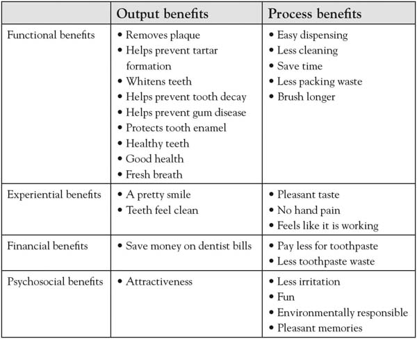

In August 2008, CEO Mike Lenahan was finding growth to be challenging for his firm Resource Recovery Corporation (RRC). RRC is a small competitor in the recycling industry, geographically constrained with a pool of about 30 customers, all of whom are foundries. Foundries use tons of sand weekly for moldings and then need to dispose of it. RRC was created in the interest of reducing disposal cost and identifying reuses of the spent sand and other materials. The company had very close relationships with this customer base, in part because in 1991, about 15 of these 30 foundries had actually banded together to form RRC, as a low-cost competitive alternative to the large recycling firms, including Waste Management. These large competitors had more recently constrained RRC’s growth.
As part of a 3-Circle project, Mike’s executive team undertook interviews with customers to learn more about how they valued their service versus the service of competitors. Issues of cost levels, aspects of the firm’s recycling methods, speed of service, reliability, and size of the company all came up in the discussions with customers. Many of the customer assessments were positive on these dimensions. When it came to size of the company, RRC executives felt that their small size was a significant advantage to them in the eyes of the customer. Mike and his team believed that small meant fast on the feet and responsive, a major advantage over very large competitors slowed down by corporate hierarchy. However, when they explored the deeper meaning of “firm size” to customers, they were stunned. Instead of seeing RRC’s firm size as a strength, customers saw it as a weakness. When Mike and his team dug into this assessment, they found customers to be concerned about the long-term viability of a small firm in an industry in which four large competitors have over half of the market share. In other words, the sentiment they heard was “we know you’re good and we love your cost model, but we don’t know if you are going to be around in five years.”
RRC quickly responded to these concerns and, within a month, increased its sales at a level that represented 10% of the company’s annual sales. This was accomplished by conducting a strategic review of all the capabilities, resources, and assets the firm had access to that signaled longer-term stability. They had recently firmed up a variety of resource commitments and external partnerships and had asset investments and customer relationships that reflected a clear external commitment to the firm into the future. The RRC team then developed a sales strategy that focused customers’ attention on the strength of these resource commitments and relationships, and returned to these customers. On top of an already compelling cost model, this allowed the team to land an account that had been sitting on the fence for some time, and provided a robust piece of revenue that has helped stabilize the firm in more recent recessionary times.
Mike Lenahan runs a smart company that is very close to its customers. Yet in these relationships—and unbeknownst to RRC—customers’ persistent belief that “small equals unstable” had existed for some time, limiting their sales growth. Is it uncommon for executives to feel confident that they know customers but to then get blindsided by unexpected customer assessments? In 3-Circle projects with over 200 executives, we have found the majority indicating surprise at the insights obtained. Most managers initially believe that they have a reasonable, intuitive understanding of the value customers seek. Yet with deeper discussions with customers, they very frequently discover insights that materially improve growth strategies.
But can we get a broader sense of the payoffs from deeper understanding of customer value? In an important research study that provides the foundation for his Momentum Effect model of growth, Jean-Claude Larreche of INSEAD examined the financial results for 367 of the largest worldwide companies for the 20-year period from 1985 through 2004. Some of the most interesting discoveries from the research focused upon the 119 leading consumer goods firms.Larreche (2008a, 2008b). Consumer firms are the focus here because they were the largest category of firms in Larreche’s study. Larreche sorted these consumer firms into three groups: those firms that increased, those that decreased, and those that held constant advertising expenditures over that time period (where advertising spending was measured by the advertising-to-sales ratio, or A/S). Consistent with a traditional view, more intensive advertising was found to produce positive financial results, as measured by improvement of firm value. The group that increased its A/S ratio over time (labeled pushers by Larreche) experienced improvement in market capitalization that was 28% higher than the firms who held their A/S ratios roughly constant (labeled plodders). Improvement in market capitalization over time for the pushers matched the average change in the Dow Jones index for the same time period, indicating that “marketing as pushing” is a reasonably successful strategy. Figure 4.1 "Stock Market Performance of Plodders, Pushers, and Pioneers" shows the results for these two groups as the first two bars, indicating that increasing advertising intensity leads to greater stock market value.
However, note that there is a third group that Larreche identified: the firms that actually reduced their advertising spending over time. Based on the apparent positive effect of greater advertising intensity for pushers, we might expect that this third group would significantly underperform over time. Yet they not only beat the Plodders by 108%, they also substantially outperformed the pushers (by 80%)! This stunning result has a simple interpretation. It is not that these firms found advertising ineffective, reduced it, and subsequently increased performance. Instead, it is that there is another element of strategy to consider: the excellence of their products and services. This third group—labeled the pioneers—includes firms that design products and services with such compelling and unique value that they create their own sales momentum. In short, demand for these firms’ products and services is less a function of advertising and communications and more a function of how well they deliver the value that customers seek. In essence, these firms allow their actual offerings to do the talking.
Figure 4.1 Stock Market Performance of Plodders, Pushers, and Pioneers
Source: Adapted from “Momentum Strategy for Efficient Growth: When the Sumo Meets the Surfer,” by J-C. Larreche, 2008, International Commerce Review, 8, 22–34.
So where do these more compelling offerings come from? Whether the firm is Apple, Starbucks, Southwest Airlines, FedEx, or Mike Lenahan’s Resource Recovery Corporation, the compelling offerings come from a deeper understanding of customer value than competitors have. This chapter defines and explores customer value. We first consider the fundamental dimensions of customer value and then consider how studying these dimensions can help in understanding competitive dynamics and growth strategy. We further consider that there are important growth opportunities in thinking more broadly and deeply about customer value than competitors do. The last section of the chapter overviews an approach to engaging the study of customer value.
Sometimes, customers’ choices are difficult for a firm to understand. Consider Chris, a consumer evaluating two brands of aspirin side-by-side. One brand, the national brand, costs $5.99. The other brand, a store brand, costs $3.19 for a package that contains more than twice the quantity in the national brand’s package. Chris winces when she sees the price difference, as she is managing her household under an end-of-the-month budget constraint, so even a couple of dollars really matter. In addition, Chris has a high degree of confidence—based on research evidence and the reported conclusions of the U.S. Food and Drug Administration (FDA)—that one unit of the generic brand provides essentially the same performance and benefits as one unit of the national brand. Yet, after brief consideration, Chris grabs the national brand and puts it in her shopping cart.
Observing such a decision would be extremely disheartening to two people: (a) a classical economist, and (b) the category manager for the retailer who wishes to build their store brands. The decision would not make sense to the economist, who assumes that consumers are utility maximizing. The economist knows that, given full knowledge of the brands, Chris should choose the best value for the money. Similarly, the store category manager might be equally disappointed over Chris’s choice, as the manager is seeking to build the private label brand’s sales performance.
But Chris’s decision makes sense when one considers the reality that she sees. She is buying the aspirin for her husband, who was just advised by his doctor after a check-up to take one aspirin a day for circulation. This decision is linked to a very important concern for her: the health and safety of her spouse, which motivates her to manage risk. Further, the national brand was always in the medicine cabinet at her home when she was a little girl. She has a deep and abiding trust in the brand, as her mother was always a loyal purchaser. Although dressed in packaging with similar colors and design, the store’s private label brand, positioned right next to the popular national brand, has plainer and less informative packaging. Yet Chris remembers reading an FDA conclusion that generics can be expected to produce the same benefits as the brand-name equivalent provided they have gone through the same approval process. So with a very high level of confidence, she assumes these two brands are very similar in the basic benefits they deliver.
In the end, though, this is not a decision where she wants to take the chance that the private label manufacturer did not “go through the approval process.” This will be a product her husband will be taking regularly, for a long period of time, to keep him healthy. In addition, although her husband has never had a stomach problem from using aspirin, she notes that the national brand has a coating, which may help in everyday consumption, just in case. For a brand with which she is more assured, Chris is happy to pay $2.80 more for a package containing less than half the number of aspirin tablets. From different perspectives, this decision may not make sense to people, yet it makes complete sense to Chris.
As we have discussed, a common representation of customer choice is to summarize key reasons for purchase as benefits or costs, and to suggest that the customer makes an overall evaluation of each choice option, comparing these concepts.This notion is standard to many conceptualizations in the disciplines of marketing and in the trade literature on measuring customer value and satisfaction. See Zeithaml (1988); Kordupleski (2003); and Gale (1994). The benefits represent what the customer gets from the purchase. This “get” can be broken down into component parts, often identified as attributes. Recall that in Chapter 2 "Introduction to 3-Circle Analysis", we defined attribute to be an inherent characteristic or a quality of some object. In Chris’s decision, she considered attributes such as effectiveness, package size, familiarity with the brand, and whether the aspirin is easy on the stomach. What is the “give”? This is Chris’s perceptions of the costs of the purchase, represented most predominantly by the price in this case. Two issues briefly bear further discussion.
First, somehow, Chris obviously combines this information to come to a choice. We know that she considered price and package size trade-offs, for example, and further integrated her trust in the brand. There is no one particular method by which customers choose—some people may be completely price driven (i.e., “always choose the lowest price”), while others may be totally driven by a perceived benefit (e.g., “always choose the most effective”).To see a basic accounting of the types of choice rules that consumers may use in decision making, see Bettman (1979); Wilkie (1994). For our purposes in this book, we will get enough information in knowing that (a) customers make choices, (b) those choices involve evaluating different options on particular attributes, and (c) those attributes vary in importance.
The second point is to distinguish between attributes and benefits, but then to suggest that we will often refer to them in the same breath. While an attribute is an inherent quality or characteristic of a product or service, a benefitA result or outcome associated with consuming that product or service. is a result or outcome associated with consuming that product or service. So while effectiveness (measured by amount of pain killer in the aspirin) could be considered a feature or attribute of aspirin, the associated benefit of consuming the aspirin is that “I feel better quickly.” Alternatively, the benefit attached to a larger package size is that “I don’t have to go to the store as often.” Very often, measurement of customer beliefs is made at the attribute level because attributes are concrete and easy to envision. We will soon see that the consumer’s translation of attributes to benefits (and then even deeper values) becomes critically important for creating distinctive value around which growth strategy can be built. Before we get there, though, let us consider attributes as dimensions of value in more depth.
In the preceding analysis, the attribute is the key unit of analysis—it might be thought of as the DNA of customer choice. Let us first consider some basic principles underlying the evolution of competition in a given market. In his book Strategic Marketing Management: A Means-End Approach,Parry (2002). Mark Parry provides an excellent illustration of the principles described here in his analysis of a seemingly simple product category—toothpaste. Beginning with Pepsodent in the 1920s, and its appeal to white teeth and attractiveness, and carrying through to developments of fluoride, health, and good parenting (e.g., Crest, in 1956), packaging (e.g., first pump in 1984 by a brand called Check-Up), and baking soda (Arm & Hammer, in 1986) as examples, Parry’s work illustrates the story of competitive dynamics in the market as a story of attributes and benefits. This historical review provides a helpful context in which to highlight the following key principles regarding customer-value dynamics and competition.The six lessons described here are based upon a variety of sources, each source reflecting an important contribution to the literature on strategy. These include Peter Dickson’s (1992) work on competitive rationality and market dynamics, Theodore Levitt’s (1980) work on differentiation and associated dynamics, Chan Kim and Renee Mauborgne’s (1997, January–February) work on value innovation, and Tom Reynolds’s work on laddering and values (Reynolds and Gutman 1988).
Lesson 1: Every choice option—particularly products and services in the marketplace—can be broken down into attributes and benefits. Figure 4.2 "How Many Attributes?" is a picture of a contemporary package of Crest toothpaste. How many attributes and benefits are reflected on the label? A quick count shows at least seven—tartar control, whitening, with Scope, minty fresh, liquid gel, fluoride anticavity, and strengthens enamel. Note that the attributes are presented as factual statements of product features (e.g., “contains fluoride”), while benefits reflect outcomes of using the product (e.g., “strengthens enamel”).
Lesson 2: Certain attributes and benefits are required just to be in the game. Some attributes and benefits in a category are “stakes of the game”—your brand needs to have them just to play. So competing automobile manufacturers make vehicles with four wheels and a steel or aluminum chassis that run (largely) on gasoline and get people from point A to point B. These attributes represent the “core” product. For toothpaste, the core product is simply having an agent of some form (the choices now include paste, liquid, or gel) designed to clean teeth and made available in easy-to-use packaging, conveniently distributed in high-frequency locations.
Lesson 3: Other attributes and benefits provide differentiation. A fundamental law of the marketplace, however, is that competitors seek growth by differentiation. That is, in order to motivate and incentivize customer choice of their brand, the firm seeks to make it different from the competition in a way that is important to customers. So, for example, Crest was the first to introduce fluoride as an ingredient (an attribute) in 1955. That introduction created the modern era of competition in the toothpaste market. In the intervening 40 years, the innovation and product development in this category has been fast and furious.
Figure 4.2 How Many Attributes?
Lesson 4: Once-differentiating attributes eventually become common, competition evolves around the ebb and flow of new attributes and benefits, which accumulate over time. Parry follows the evolution of the toothpaste product category, beginning with initial value-added attributes around taste, whitening, and social benefits. But Crest’s introduction of fluoride protection and subsequent endorsement from the American Dental Association in 1960 turned the market on its head. This created a new subcategory called “therapeutic,” which gained 14.5% of the market by 1960 and 54.7% by 1965.Miskell (2005, January 17). Today, however, we find that nearly all toothpaste brands have fluoride. In other words, fluoride has gone from being a differentiating attribute for Crest to being a must-have. (This is an idea explored in more detail in the next chapter.) But there is a critical point here in understanding the dynamics of competition. The tendency to seek differentiation builds on itself. Firms produce a constant stream of new ideas when the power of the last idea to distinguish the brand has “worn out.” This leads to a situation in which attributes are added over time, each with an eye toward seeking a differential advantage for the brand and each urgent when competitors have copied the last new feature. Figure 4.3 "Benefits From Toothpaste" illustrates, for the toothpaste category, how those value-adding features or benefits accumulate. The product becomes much more complex than it was at the start and enormous variety ensues. The point here is that there may in fact be growth opportunity in understanding this accumulation—in part because some attributes that were once differentiators may in fact become expendable over time!
Lesson 5: While attributes reflect features, ingredients, or characteristics of a choice option, benefits represent the consequences or outcomes of using that choice option. One of the most often-repeated phrases in the discipline of marketing is that “people buy benefits, not attributes.” This is a significant point, one often lost in practice. Chris Wirthwein, an ad agency CEO, describes his recent desire to indulge a childhood passion and purchase a telescope to “explore the universe again.” When he began shopping, Wirthwein had a general idea about the benefits he sought but was essentially a novice beginning at square one. What he found were manufacturers’ websites that were very thorough at explaining the detailed technical features of their telescopes but extremely poor in making sense of them for potential buyers:
Figure 4.3 Benefits From Toothpaste
Source: Adapted from Strategic marketing management: A means-end approach, by M. Parry, 2002, p. 36, Exhibit 2.8, New York, NY: McGraw-Hill.
Everyone talked over my head. On every website I visited, the copy seemed to have been written not for humans but for some race of unemotional alien beings. I was promised diffraction-limited Schmidt-Newtonians, achromatic refraction, and German-type equatorial mounting. I was enticed with enhanced aluminum coatings and large aperture Dobsonians…[the dealers’ websites] were more muddled and confusing than the manufacturers’ sites.Wirthwein (2008), p. xvi.
In fact, there is a certain cause and effect for customers in choice and consumption behavior. We eat and that satiates our hunger. We drink and that satisfies our thirst. We look into a telescope and experience the thrill of exploring the stars. So when we buy, we do our best to estimate whether the attributes of the offering will get us to the outcomes we seek. The reason fluoride became such an important attribute for Crest to add was that it so clearly linked to higher-order, significant personal benefit for consumers (i.e., fluoride → cavity prevention → good health). As customers, we tend to think in terms of outcomes from using the product or service. In contrast, firms tend to think in terms of the features of the products or services that they have spent so much time developing, often without fully thinking through whether the product or service will do the job the customer would like to get done.
A key to building growth strategy is to think broadly and think deeply. Thinking broadlyBreaking outside of a current view of your product or service in terms of price, quality, and service. means breaking outside of a current view of your product or service just in terms of price, quality, and service. Your product or service, and the way you interact with customers, produces all sorts of outcomes or benefits for them, with many dimensions. It is important to put meaning on those benefits. Thinking deeplyRecognizing that there are deeper values or problems that drive customers’ decision making. means recognizing that there are deeper values or problems that drive customers’ decision making. Understanding this can literally be the difference between big success or failure of a new product. The idea of thinking broadly means to stop for a moment and consider the different potential dimensions on which customers may get value from your firm and your offering. So what are the types of benefits that customers might experience in purchasing and consuming products or services? As outlined here, there are many more than you may realize.
Lesson 6: Attributes are only important because they produce outcomes relevant to the customer’s values. The story behind DuPont’s success with Teflon illustrates this point. Teflon was derived from a solid called polytetrafluoroethylene (PTFE) discovered in 1938, one of the most slippery materials in existence. A French engineer named Marc Gregoire later discovered how to bond the material to aluminum. Teflon-coated cookware became available in the United States in the 1960s. But DuPont’s early efforts to promote this new product around the functional benefit of “fat-free cooking” produced poor results. It was not until the product was repositioned around a different functional benefit, “fast clean up,” that sales took off. Why? Interestingly, it is the same attribute (Teflon coating) and the same benefit (stuff will not stick to it) in either case. Yet the real tale is told by customers’ deeper values and benefits sought—that is, what they actually get from consuming the product. Consumers in the 1960s—especially the late 1960s, as married women were moving back into the work force—put a much greater personal value on time saving than on healthy eating. The key point is that the value that people see in any given bundle of attributes depends upon their own personal values.
Who knew toothpaste could be so complicated? But understanding these tendencies is critical to competitive growth strategy development. Growth can be found in understanding these values more deeply, by both discovering new ways to connect with them and identifying where existing attributes no longer connect. To get to these insights, though, we need a process for exploring and uncovering customer value sought. That is where we head next.
A fundamental goal in the 3-Circle growth strategy process is to learn about customer value; first, estimating customer judgments from our own perspective, and then, obtaining customers’ actual perceptions of value, importance, and beliefs about our firm and the competitive firm. There are a few key lessons in two separate areas that we will discuss here: executive estimates and actual customer self-reports.
For several reasons, it is initially very important for the executive team to provide their own estimates of customer value before getting feedback from customers.We use the term “customers” (as opposed to “consumers”) to provide a general reference that would cover both business-to-consumer and business-to-business markets. It is important to note, however, that the term is not meant to refer only to current customers. Generally speaking, there is value in sampling current customers, potential customers who have never tried your offering, and especially customers who have tried your offering but whose business you have lost. First, it forces you and the team to think through the kinds of questions you will eventually ask of customers and how you might ask them. Second, in requiring the team to come to a consensus about expected customer evaluations, it may create conversations that have never really been explored before—vital conversations around the core value issues of the business. Finally, these estimates provide a foundation against which to compare actual customer beliefs that you obtain later. After you have conversations with customers, you may find that your team was right on the mark in anticipating customer perceptions. Alternatively, you may reveal areas in which your expectations were very different from what customers said. It is critical to note that in these differences exist potentially enormous growth opportunities. So, in this way, surprise is a good thing because it will help motivate the subsequent actions to close the gaps.
The first thing that must be done is to estimate a list of customer reasons for choice. You got some exposure to this in Chapter 3 "Defining the Context" (recall the “service station A versus service station B” exercise). The way to do the exercise is to sit down for a 5- to 10-minute time frame and write down as many reasons you can think of why people would purchase your brand over the competitors. Then repeat the exercise, thinking of why customers might choose the competitive brand over yours. A key here is to pretend: step into the shoes of your customers.
Ultimately, reasons why people make choices will be stated as either attributes or benefits. To illustrate, consider that the president of a regional bank defined a project around the following context statement: “My goal is to figure out how my bank can grow by creating more value for and attracting new small business loan and deposit clients relative to their current banks.”
Note that in a given region, there are many banking players, so market share is spread out over a variety of competitors. As such, this executive and his team felt it best to define the competitor as the “current bank” and to allow the target competitor to vary as needed. In the preliminary estimation of the reasons for choosing one bank over another for loan and deposit business, the bank’s president surveyed nine different regional managers reporting to him, who, together, defined the following list:
This is a very good list that covers both the numerator of the value ratio (i.e., benefits such as timeliness of service, trust, and security of the bank) and the denominator (i.e., fair and open pricing). As we will see, subsequent conversations with customers helped the team refine the list and statement of reasons. There are a couple of important pieces of advice here as you explore the reasons:
Given a list of attributes and benefits, we would next have our executive team estimate customer perceptions of the importance of those attributes, as well as customer beliefs about our brand and the competitive brand on each dimension.Although, as we know, growth projects can be defined in almost any context (e.g., internal company projects, personal projects, projects for charities), for simplicity in our description of the process in these chapters, we refer to the company unit of analysis as “the firm” and the two alternative choices as “our brand” and the “competitive brand.”
Estimate customer beliefs about our brand and competitive brand. To understand how to think about beliefs, it is important to understand the insights needed to effectively judge competitive positions. There are two relevant reference points:
The gathering of insights from customers is a critical step in developing growth strategy. It is not as difficult as it seems. Here are a few rules to guide the effort.
Rule 1: Just do it, even if it is only a small sample. For a start, interview 5 to 10 customers. Ironically, there is often initial resistance among executives to talk to customers about issues of value. The most common counterarguments are either “we already know what customers want” or “what will we be able to tell by talking to only a few customers?” The resistance is natural and logical. But this is one time when you need to suspend belief. In addition, it is not that difficult and costs very little. What do you ask? Essentially, you can ask the same basic questions that the members of the executive team just answered—(a) how important is each of the attributes and benefits on the list, and (b) how do customers evaluate our offer and the competitors’ offers on those dimensions? When you are asking the right questions, you will find insight, even though such a sample is too small to make inferences about the larger population (see next paragraph). Open-ended interviews with customers—whether on the phone or in person—are thought provoking and may identify some obvious problems that require immediate exploration or even quick fixes. More generally, they will uncover issues that require deeper study and that even a small number of customers will really appreciate.
Rule 2: Don’t get too carried away with your conclusions from small samples. So what happens once you actually sit down with a few customers? You obtain new insights that contrast, and may even contradict, your previous beliefs. In other words, you will learn. You also find that customers are appreciative. And you may see opportunities to make some short-term moves that will correct problems and improve your value. So we find a surprising aggressiveness among executives to act on this small-sample feedback because it tends to be powerful and energizing. Take care, though. It is not a good idea to make major investment decisions based on feedback from 1 or 5 or 10 customers. These initial interviews often, at best, provide you with a structure for further refining your hypotheses about the value customers seek from your organization. If well selected, insights from this small sample will (a) potentially have some immediate implications for fixing problems of which you were unaware, (b) identify longer-term growth opportunities to explore, and (c) provide the basis for further study with larger samples. We caution against running too far with the inputs from a small number of qualitative interviews without testing those conclusions on larger samples, however (unless those customers selected for the survey account for a significant portion of your company’s revenue). The primary mandate is that those who you interview or survey are representative of the customer segment you have selected for the project.
Returning to our bank example, recall that the regional managers (RMs) for the bank estimated the following four attributes at the top of the list for small-business customers:
In fact, the president conducted individual, in-depth exploratory interviews with a diverse group of seven small-business employees who had just started doing business with the bank during the previous 9 months (all from different industries). Interestingly, as a group, the small sample of business people framed the value they were looking for somewhat differently than the RMs. The small-business customers felt that the bank’s unique value was tied to (a) the knowledge of its staff and their willingness to advise (as opposed to simply sharing knowledge), (b) the fact that the bank was locally owned and cared about its community, and (c) the team approach the bank used in providing service. There were two surprises. First, the importance of local community involvement was greater than the RMs expected. Second, the “team approach” did not even make the RMs’ top-10 list of attributes but was of central importance to customers!
Now, why is the team approach important? Here is where we need to think deeply.There are a variety of research approaches that are used for understanding deeper customer motivations for purchase and consumption behaviors that consumers may have a difficult time articulating. For excellent discussions of projective research techniques, see Wilkie (1994); Churchill (1999); and Madison (2005). Gerry Zaltman’s well-known work in the use of metaphor in studying consumer motivations is the topic of a recent book Zaltman and Zaltman (2008). For insight into laddering, see Reynolds and Gutman (1988; footnote 5); Reynolds (2006); and Wansink (2003). In the 3-Circle growth strategy process, laddering research is undertaken as a systematic effort to drill down into the needs and values that truly drive customer decision making. Laddering is a research method that might be described as “root-cause analysis” with customers. The method seeks to uncover the underlying values or reasons why certain attributes are important and influence decision making by asking, “why is that important?” in a sequence of questions. As an illustration, a team from the Infiniti automobile brand used laddering on 25 attributes of a new car design to “identify the core value embodied by or most closely associated with each feature.”Schroder (2009, October 23), p. 28. Figure 4.4 "Ladder for Infiniti M35 Design: Around View Monitor" shows the aggregate ladder that emerged when consumers were asked why they felt the “around view monitor” with video on all sides of the car was important. Based on the research across all the attributes, the strategy and planning teams were able to prioritize new features according to the core values of the target market and make feature rollout recommendations based on the laddering research. The Infiniti EX35 is the first model to have the around-view-monitor (AVM) feature.
In the banking case, laddering with the customer respondents revealed they were driven by both time and profitability (not surprising for small businesses!). Figure 4.5 "Ladders for Small Business Bank Customers" provides the laddering results for the three top attributes, as identified by our bank president. Note that the bank’s team approach creates value for small-business customers by leveraging the knowledge of many people (less likely to miss something), and also by creating a more efficient process. The truth is we could push this ladder further—with a couple more “whys”—we would likely find out that an efficient process is important because there are so many other things that a small-business person has on the plate, and that time is one of their most precious commodities.
Figure 4.4 Ladder for Infiniti M35 Design: Around View Monitor

Figure 4.5 Ladders for Small Business Bank Customers

It is important to note that the deeper values that you reach via laddering and other qualitative research techniques tend to reveal a lot about how we are hardwired as human beings. Across different countries and industries, the following types of values often emerge in laddering studies and other studies of values:
To illustrate, Figure 4.6 "Ladder for Customer of Research Services" presents a ladder from a 3-Circle growth strategy study conducted by a research supplier that sells research services to brand managers in particular consumer-package-goods categories. Although a totally different context and a different attribute than the Infiniti (in this case, simply vendor familiarity), the end value is the same: peace of mind.
Figure 4.6 Ladder for Customer of Research Services
Among several implications that the bank took away from the 3-Circle analysis was the importance of building and reinforcing the team culture as their distinctive competitive advantage (what we call Area A). This involved creating new education programs and building in initiatives to proactively get clients and prospective clients in front of several different bank team members within relevant specialties.
One lesson from this chapter is that when you ask the right questions of customers, the insights that emerge are almost always actionable for growth. From the customer’s perspective, value is essentially what one gets relative to what one gives, and growth opportunities emerge from developing a broader and deeper understanding of both numerator and denominator. Competitive markets evolve around a shifting definition of value, which places a great premium on the firm’s ability to maintain a close eye on the value customers are seeking and how that is changing over time. There is nothing new in that message. But what is new (and needed) is a way to break down value and uncover the highest-priority growth ideas. We start with this issue in Chapter 5 "Sorting Value".